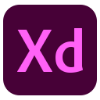
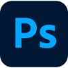

How i get things done
Design Process


These are the tools I use on a regular basis to help me go from a sketched out wireframe on my notebook to a complete, content filled, fully animated prototype.
Developement Process

Every project has different needs, but I have found that these are the tools I need to make my designs come to life and make them really easy to customize and expand down the road.